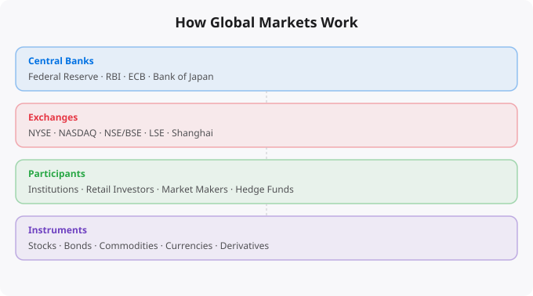

Most people who invest in financial markets do not have a clear mental model of how those markets actually function. They know that stocks go up and down, that news affects prices, and that some people make money while others lose it. But the deeper mechanisms — how prices are set, who the major participants are, how information flows through markets, and what drives long-term returns — are less understood. This foundational knowledge is what separates investors who make consistent long-term decisions from those who react emotionally to market noise.
Financial markets exist to solve a fundamental economic problem: connecting people who have capital (savings they want to put to productive use) with people who need capital (businesses, governments, individuals who want to invest or spend more than they currently have). Without financial markets, this matching would happen slowly, expensively, and imperfectly. With financial markets, capital can flow rapidly and efficiently from where it is sitting idle to where it can create value.
Stock markets specifically allow companies to raise capital by selling ownership stakes to investors. When a company conducts an IPO (Initial Public Offering), it sells shares to the public and receives cash that it can use to expand operations, fund research, or pay off debt. After the IPO, those shares trade on secondary markets (like the NSE, BSE, NYSE) where investors buy and sell them from each other. The company does not receive money from secondary market trades — only the original IPO proceeds go directly to the company.
Stock prices are set by the interaction of buyers and sellers. At any given moment, some investors want to buy a stock (they believe the current price is attractive relative to future prospects) and some want to sell (they believe the price is fair or too high, or they need cash for other purposes). The price at which a transaction occurs is the price at which a buyer and seller agree.
Modern equity markets use electronic order books that match buy and sell orders continuously. The bid price is the highest price a buyer is willing to pay. The ask price is the lowest price a seller is willing to accept. Transactions happen at or between these prices. The difference between bid and ask — the spread — represents a transaction cost and is narrower for highly liquid stocks and wider for illiquid ones.
What moves prices is the aggregate change in expectations. If new information suggests a company's future earnings will be higher than previously expected, buyers become more willing to pay more, sellers want more to sell, and the price rises to reflect the improved outlook. If expectations deteriorate, the reverse happens.
Individual retail investors like you are a relatively small portion of total market activity in most developed markets. The major participants are institutional investors: mutual funds, pension funds, insurance companies, sovereign wealth funds, endowments, and hedge funds. These institutions manage trillions of dollars collectively and are the primary drivers of price discovery and market liquidity.
Market makers are firms or individuals who provide liquidity by continuously quoting both buy and sell prices. They make money from the spread between bid and ask prices and play a crucial role in ensuring that investors can always find a counterparty for their trades. High-frequency trading firms use sophisticated algorithms and extremely fast computer systems to exploit tiny price discrepancies across markets. They operate on timescales of microseconds and their activities both add liquidity and raise questions about market fairness for slower participants.
In modern financial markets, information travels extremely fast. Material company news — earnings reports, management changes, mergers and acquisitions — moves prices within seconds of release. Macroeconomic data — inflation reports, employment numbers, central bank decisions — triggers immediate market reactions globally. The speed of information processing has increased dramatically with electronic trading and the rise of algorithmic trading systems.
This rapid information processing is part of what makes markets difficult to beat consistently. If a piece of public information can move prices within milliseconds, there is very little window for an individual investor to trade on that information profitably. The information is already in the price by the time most people read about it.
Over the long term, stock market returns are driven by three factors: earnings growth (how much more profitable the businesses in the index become over time), dividend yield (the cash returned to shareholders), and valuation changes (expansion or contraction of the multiple investors are willing to pay for a given level of earnings).
The first two factors — earnings growth and dividends — are driven by real economic activity: innovation, productivity improvement, population growth, and the expansion of commerce. These are the durable sources of long-term returns and are why equities outperform bonds and cash over long periods. The third factor — valuation changes — can significantly boost or reduce returns over medium-term periods but tends to mean-revert over the very long run.
Bond markets are larger than stock markets by total value and are critically important to understanding equity market behavior. When bond yields (interest rates) rise, they make bonds more attractive relative to stocks, which tends to pressure equity valuations. They also make borrowing more expensive for companies, which affects their cost of capital and future profitability. The relationship between interest rates and equity markets is one of the most important dynamics in financial markets.
Central bank policy — specifically decisions about short-term interest rates and monetary expansion or contraction — affects the entire financial system through its impact on bond yields. Understanding the broad outlines of monetary policy and its market implications is essential foundational knowledge for any investor.
← Back to BlogReading about markets is not investing. Understanding market theory is not making money. The gap between knowledge and results in investing is filled by the practice of forming independent views, testing them against reality, and updating your thinking when evidence contradicts your expectations.
Developing a genuine market view requires: choosing 2-3 indicators to follow consistently rather than tracking dozens superficially, reading primary sources (earnings reports, central bank statements, economic data releases) rather than just media commentary, maintaining an investment journal where you record your reasoning when making decisions, and reviewing that reasoning 6-12 months later to understand where your thinking was right or wrong.
Weekly routine (30 minutes):
Monday: Review portfolio performance vs benchmark
Tuesday: Read one company annual report (if stock investor)
Wednesday: Check economic calendar for key data releases
Thursday: Review Fed/RBI communications from that week
Friday: Journal -- what happened this week vs expectations?
Monthly routine (2 hours):
Review asset allocation vs targets
Rebalance if any asset class drifted more than 5%
Read one investment book chapter or whitepaper
Review all open positions and thesis validity
Quarterly routine (4 hours):
Portfolio review: what worked, what did not, why?
Tax optimization check
Update financial goals
Read one earnings season summary for key companiesMarkets in liquid, public securities are highly efficient at incorporating publicly available information. Reading the same Bloomberg article, watching the same CNBC segment, and following the same analysts as millions of other investors does not give you an informational edge. By the time you read it, the market has likely already priced it in.
Where individual investors can have a genuine edge: patience (most institutional investors face quarterly performance pressure that prevents holding through temporary weakness), sector expertise (knowing an industry deeply as a practitioner gives real insight), tax efficiency (individual investors can optimise for after-tax returns in ways institutions cannot), and behavior (simply not panic selling during drawdowns outperforms most active strategies).
Beginners think about investing as picking the stocks that will go up the most. Experienced investors think about risk management first -- ensuring that mistakes do not destroy the portfolio's ability to recover and compound. The most important risk management principles: never invest money you will need within 5 years, diversify across asset classes and geographies, avoid leverage (borrowed money amplifies both gains and losses), and size positions so that being completely wrong on any single investment does not materially damage the portfolio.
Standard financial planning guidance: build a 3-6 month emergency fund first. Then invest 10-20% of gross income, increasing toward 20%+ as income grows. For aggressive wealth building, aim for a 30-40% savings rate. Invest consistently regardless of market conditions -- time in the market beats timing the market.
Investing is deploying capital for long periods (years to decades) based on fundamental value creation. Trading is buying and selling over shorter timeframes based on price movements. Most retail investors who attempt trading underperform a simple index fund. Investing in low-cost index funds consistently outperforms most active strategies over 10+ year periods.
Start with NIFTY 50 or NIFTY 500 index funds via SIP (Systematic Investment Plan) through any major AMC or broker. Index funds provide diversification, low costs, and performance that matches the market. Add direct equity only after you have at least 6-12 months of investing experience and genuine time to research individual companies.
Yes. India is one of the fastest-growing tech markets globally. These skills are in high demand across startups, MNCs, and product companies in Bangalore, Hyderabad, Pune, and Mumbai.
Follow official documentation, tech blogs from practitioners, GitHub repositories, and communities like Dev.to, Hashnode, and Reddit. Avoid news that creates urgency without substance.
Official documentation first. Then practical tutorials. Then build real projects. SRJahir Tech articles are written from real production experience — bookmark the series that matches your learning goal.
Consistent daily practice for 3-6 months produces real, usable skills. The key is building projects, not just reading. Every article on SRJahir Tech includes practical examples you can implement today.
Yes. All articles on SRJahir Tech are completely free. No paywalls, no subscriptions. Quality technical education should be accessible to everyone, especially aspiring engineers in India.